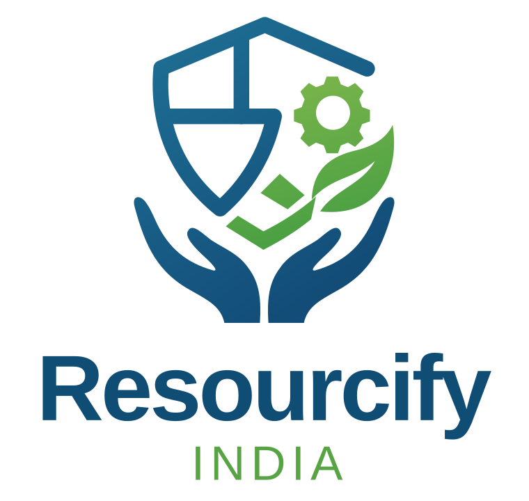

Project in progressConnecting people.
Connecting people.
Supporting businesses.
Resourcify India provides manpower to manufacturing plants, hotels, factories and other businesses.
We are working on a landing page and CRM for employee records, client firms and job openings.
- Business landing page
- Employee and firm CRM
- Job openings